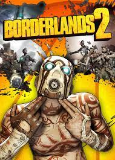
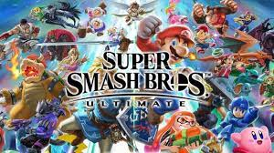

Mon incroyable et intéresente vie !!
J'ai travaillé toutes mes vaccances a Ellip6 Pierrelate dans la programmation, réparation (infomatique, mécanique) et aide a la rénovation du restorant.
Ce sont des simulateurs automobiles sur six axes, ils simulent le moindre mouvement et on fait des parties en local-host avec les joueur des simulateurs voisins les colisions sont aussi fonctionelles.
je fais de la programmation depuis 4ans notament du c++ et j'ai déjâ fais un petit jeu que je garde en stand by.
Je suis un passioné de l'histoire du cinéma et du jeu vidéo
J'ai fait un BAC technologique STI2D option SIN(SYSTÈME D'INFORMATION ET NUMÉRIQUE)
| Mes jeux tant apprécié | ||
|---|---|---|
| Borderlands 2 | FPS sarcastique style action-RPG |  |
| Looms | Jeu rétro point and click et réflexion |  |
| League of legends | MOBA et tactique en multijoueurs |  |
| Super smash bros Ultimate | Jeu de combat et de platforme |  |
| Yugioh | Jeu de carte a la magic stratégique |  |